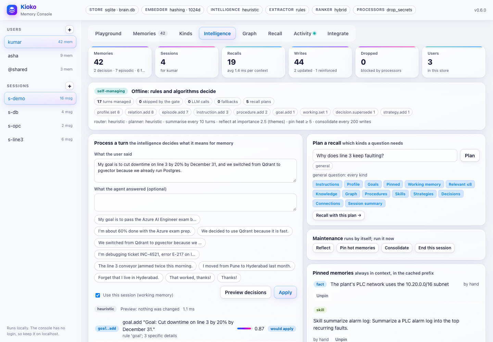
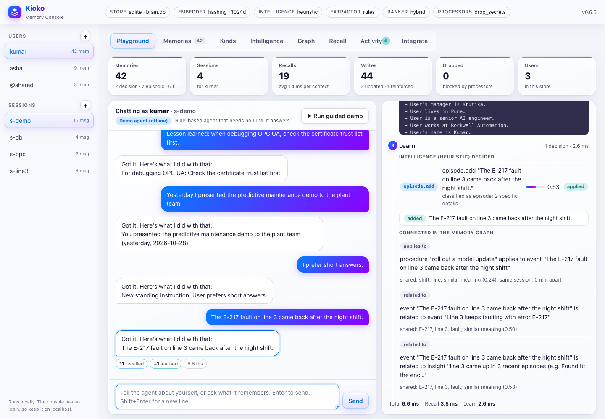
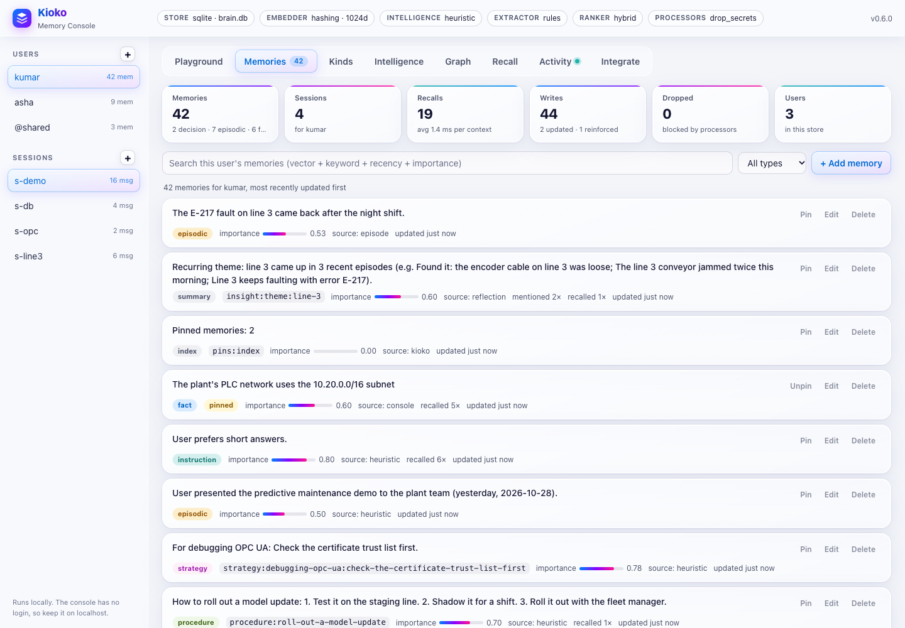
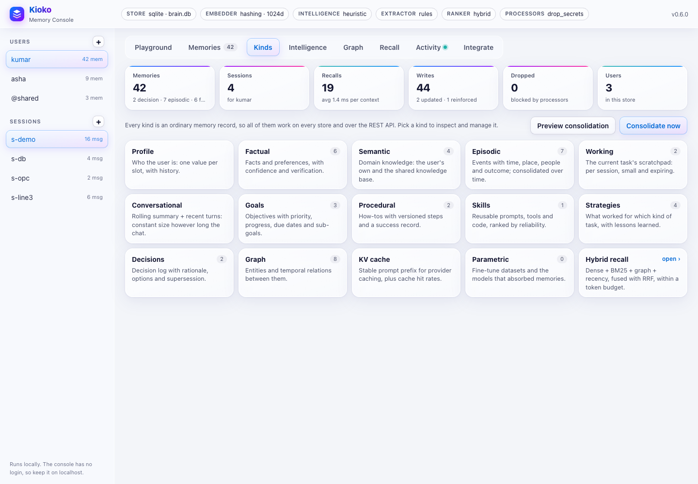
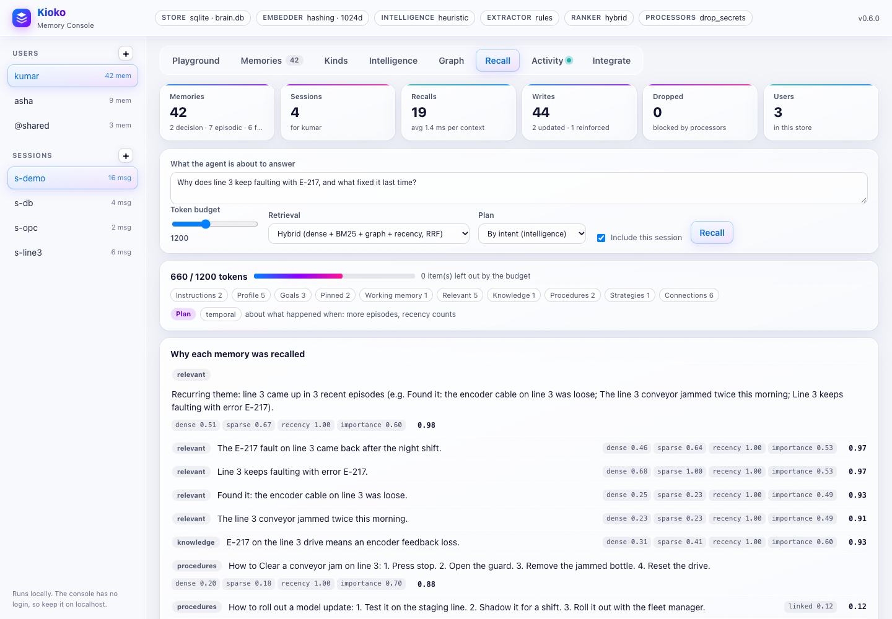
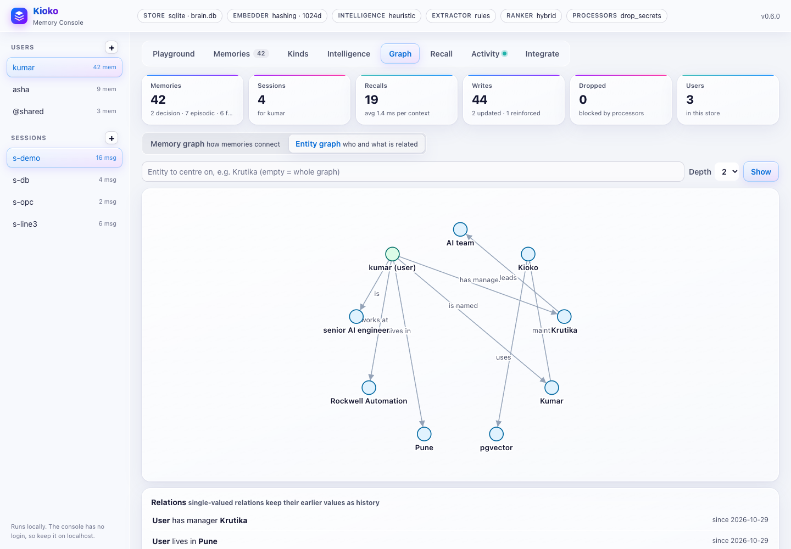
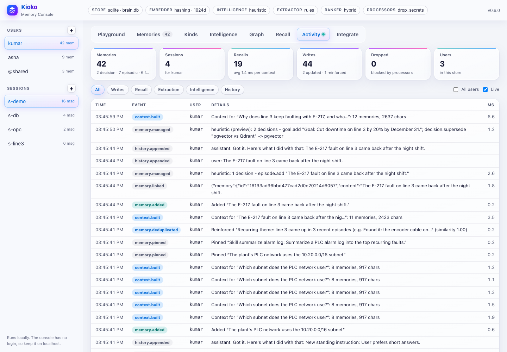

The console: see and manage memory in the browser¶
The console is a web UI over any Kioko memory. In it you can:
- chat with an agent and watch each turn's recall, prompt injection and learning;
- browse, search, edit, pin and delete memories;
- inspect every memory kind, the knowledge graph and the session scratchpads;
- preview what the intelligence would do with a message;
- plan and run a recall within a token budget;
- follow everything live.
It is part of the package (standard library only) and also serves the REST API (/v1) and MCP (/mcp).

Open it¶
Point it at the memory you want to look at:
| You want to look at | Command |
|---|---|
| a SQLite file | kioko ui --db path/to/memory.db |
| Postgres + pgvector | kioko ui --store "postgresql://kioko:<password>@db:5432/kioko" (or KIOKO_PG_DSN) |
| Qdrant | kioko ui --store qdrant://localhost:6333/kioko_memories |
a JSON config (MemoryLayer.from_config) |
kioko ui --config kioko.json |
| a running Kioko service | kioko ui --url http://memory-service:8765 (API key from KIOKO_API_KEY) |
| ... with the self-managing intelligence on | add --intelligence, or --intelligence-llm my_app.models:ask |
| ... chatting with your own agent | add --agent my_agent:build (build(memory) returns agent(message, *, user_id, session_id)) |
| on another port | add --port 8800 |
From Python, for example from a notebook:
from kioko import intelligent
from kioko.ui import serve
memory = intelligent("sqlite:///memory.db")
serve(memory, port=8765, open_browser=True) # blocks; Ctrl+C to stop
With --url, the console manages a running service. Every view, edit and maintenance action goes
through the service's REST API, so you can inspect the memory of a deployed agent fleet from your laptop.
Intelligence previews then run on the service, with its configuration.
Manage and check sessions¶
The left sidebar lists the users in the store and the selected user's sessions, with message counts. Click a session to make it the current one, or + to start a new one. The current session is the one the Playground chats in, whose working memory and summary the Kinds and Recall tabs show, and which End this session wraps up.
- Playground. Chat as the selected user in the selected session. Under every reply, the inspector shows the
turn's pipeline:
- Recall: what was retrieved, with score breakdowns;
- Inject: the exact memory block the agent received;
- Learn: what was written, or, with intelligence on, the decisions with their reasons (
goal.progress,decision.supersede,working.set...).
Run guided demo walks through it all. * Memories. Every memory of the user: type, slot key, importance, source, how often it was recalled, previous values, and pinned status. You can: * search with hybrid scoring and per-signal bars; * add, edit (the old value is kept), delete, and Pin / Unpin; * try the extractor on a message as a dry run. * Kinds. One card per memory kind with its count. Open one to manage it: * profile slots, facts, knowledge (yours and shared); * the episode timeline, the session's working memory and conversation summary; * goals with progress bars, procedures with their track record, skills, lessons and the decision log with supersession; * the KV-cache prefix and cache statistics, and the fine-tuned models.
Preview consolidation and Consolidate now run the maintenance pass.
* Intelligence.
* Process a turn: type what the user said (and optionally the reply), click Preview decisions to see
every operation the intelligence would apply, with reasons and importance, then Apply. The example
chips cover the common cases.
* Plan a recall: shows the intents of a question, the sections it needs and their caps, and runs the
recall with that plan.
* Maintenance: Reflect, Pin hot memories, Consolidate and End this session.
* Pinned memories: what is always in context, with Unpin.
* The header shows whether the memory manages itself, in which mode, and the counters: turns managed,
turns skipped by the gate, model calls, fallbacks, and operations by type.
* Graph. Two views:
* Memory graph: the user's memories as nodes (coloured by kind) and the links between them as edges
(dashed: structure such as a sub-goal or a replaced decision; green: a fix that worked). Click a memory to
see each link with its evidence, weight and author, Unlink it, see what lies further away (with the chain
of links), or Centre on this memory. Link unlinked memories links what was written before linking was on.
* Entity graph: the knowledge graph as a picture, centred on an entity and limited to a depth, with every
relation and its history.
* Recall. The block an agent would receive for a question:
* set a token budget, the retrieval mode (hybrid RRF or ranker) and the plan (by intent, or every kind);
* see the tokens used, the sections, why each memory was recalled (signals and score - linked when a
memory came in through its links), the connections among them, and what the budget left out.
* Activity. A live feed of everything the memory did: writes, recalls, extraction, history and, under
Intelligence, managed turns, pins and consolidation. It includes agents in other processes that share
the database. Tick All users to see everyone.
* Integrate. This server's live REST and MCP endpoints and ready-to-copy snippets (Python, REST, MCP,
extending), filled in with this server's URL and the selected user.
 |
 |
 |
 |
 |
 |
 |
Reach a console on a server¶
The console has no login. Keep it on a machine you control, and reach it through a tunnel instead of opening a port:
# on the server
kioko ui --db /data/memory.db # binds to 127.0.0.1:8765
# on your laptop
ssh -N -L 8765:127.0.0.1:8765 you@server # then open http://localhost:8765
Even better, leave the server running kioko serve (with an API key) and run the console locally against it:
kioko ui --url https://memory.example.com with KIOKO_API_KEY set.
In Docker, map the port to loopback only:
docker run --rm -p 127.0.0.1:8765:8765 -v kioko-data:/data kioko \
kioko ui --host 0.0.0.0 --db /data/memory.db --intelligence
Security¶
- The console binds to
127.0.0.1by default. It prints a warning when bound anywhere else, because its pages and/apihave no authentication. KIOKO_API_KEYprotects/v1and/mcpon the same server, not the console pages.- It checks the
Hostheader (against DNS rebinding) and theOriginheader (against cross-site requests), never accepts cross-origin calls to/api, and serves a strict Content-Security-Policy. - Anyone who can open the console can read and change every user's memories. Use
kioko servefor anything shared, and the console as an operator's tool.